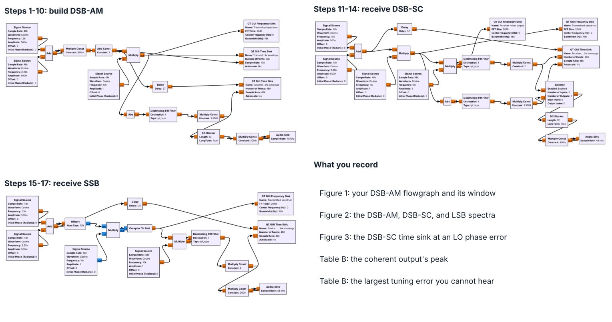
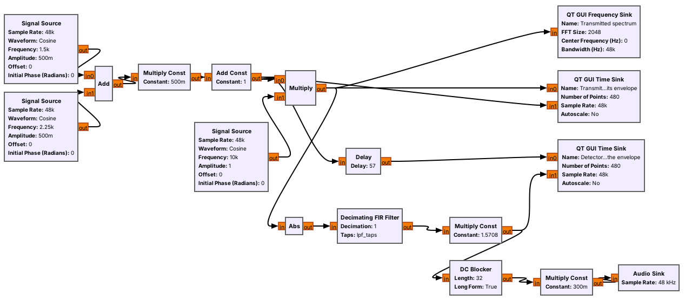
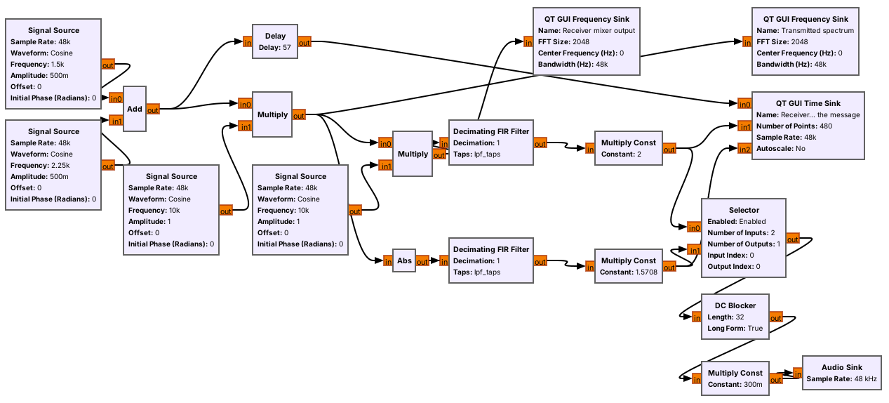
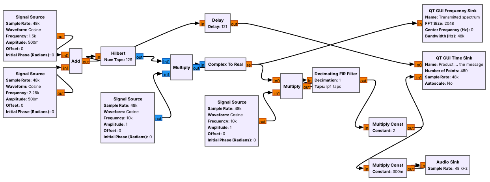

L6 Lab — AM Simulation#
AM Simulation
Build an AM modulator and demodulator and check the audio against the source.
L6 Lab · Module 3: Analog Modulation · Dr. Neil Rogers
Learning Objectives
- I can describe DSB-AM, DSB-SC, and SSB and identify each on a spectrum.
- I can implement an AM modulator and demodulator in GNU Radio and verify demodulated audio against the source.
The Big Picture

Steps 1 to 10 build DSB-AM from an empty canvas with the lab’s own message, read its spectrum, and take a quick look at overmodulation. Steps 11 to 14 run L06-dsb-sc.grc with the same message, set the receiver’s LO phase, and switch between its two receivers. Steps 15 to 17 run L06-ssb.grc, read the LSB spectrum, and step the tuning error. The spectra go in Figure 2 of the packet beside your Table A predictions, the two readings go in Table B, and the screenshots go in Figures 1 to 3. Every flowgraph is a simulation, so you need only your laptop and headphones.
Predict First
Choose an LO phase error. Before you press Show the output, set the My Prediction slider to the peak you expect from the coherent receiver; in phase, the peak is 1. Changing the phase error or your prediction hides the answer again, so each guess comes first. The widget offers 20°, 60°, and 75°, not the lab’s 45°, so its answers are not your Part 1 answer.
Build DSB-AM
Start from an empty QT GUI canvas, not
L06-dsb-am.grc.Build the lab’s message, the transmitter, and the envelope detector.
Screenshot the canvas, the window, and the spectrum.
Take a quick look at overmodulation.

Start GRC. Choose File, New, QT GUI. Do not open
L06-dsb-am.grc; the picture shows your finished flowgraph.Set the variables. Set
samp_rateto 48000 and add a Variablefcof 10000.Add the slider. Add a QT GUI Range with ID
mand label “Modulation index m”, from 0 to 1.5 in steps of 0.05, default 0.5.Make the message. Add two float Signal Sources, waveform Cosine, one at 1500 Hz and one at 2250 Hz, each with amplitude 0.5, so that their sum peaks at exactly 1. Feed both into an Add.
Build the transmitter. Add a Multiply Const of
m, an Add Const of 1, and a Multiply with a third Signal Source atfc. Send the Multiply’s output to a float QT GUI Frequency Sink.Build the receiver. Add an Abs, a Low-pass Filter Taps variable
lpf_taps(cutoff 3000, transition 1000) used by a Decimating FIR Filter, and a Multiply Const ofnumpy.pi/2with an Import block forimport numpy.Add the check. Add a Delay of
len(lpf_taps)//2on the output of the Add Const, and a two-input float QT GUI Time Sink comparing it with the receiver’s output.Add the audio. Finish with a DC Blocker, a Multiply Const set by a QT GUI Range
volfrom 0 to 1, and an Audio Sink at 48 kHz. Do not add a Throttle: the sound card paces the flowgraph.Run it. Put on headphones and run it with the volume low. On the time sink the detector output should lie on the delayed envelope; if it does not, check the Delay expression and the
numpy.pi/2Multiply Const first. Take one screenshot that shows your canvas and the running window side by side, and paste it as Figure 1. Paste a screenshot of the frequency sink as the left pane of Figure 2, and compare its lines with your Part 1 prediction; if a line sits somewhere you did not expect, check the two message Signal Sources.Look at overmodulation. Raise the Modulation index m slider to 1.5 with the audio on, watch the detector output leave the envelope on the time sink, and listen. Return it to 0.5.
Receive DSB-SC
Run
L06-dsb-sc.grcwith the lab’s message.Screenshot its spectrum.
Set the LO phase to \(45°\) and read the coherent output.
Switch between the coherent and envelope receivers.

Set the message. Close your flowgraph. Open
L06-dsb-sc.grc, set its two message Signal Sources to 1500 Hz and 2250 Hz with amplitude 0.5 each, as in Step 4, and run it.Screenshot the spectrum. Paste a screenshot of the transmitted spectrum as the middle pane of Figure 2, and compare its lines with your Part 1 prediction.
Set the LO phase. With the Receiver LO phase (degrees) slider at 0, check that the coherent receiver’s trace lies on the message; if it does not, recheck the Step 11 amplitudes. Set the slider to 45, read the peak of the coherent trace, compare with your Part 1 prediction, and paste a screenshot of the time sink as Figure 3.
Listen to both receivers. Return the LO phase to 0. Switch Listen to between Coherent and Envelope, and listen to each.
Receive SSB
Run
L06-ssb.grcwith the lab’s message.Select LSB and screenshot its spectrum.
Step the tuning error until you hear the pitch change.

Set the message. Close the DSB-SC flowgraph. Open
L06-ssb.grc, set its two message Signal Sources as in Step 11, and run it.Screenshot the LSB spectrum. Choose LSB on the Sideband menu. Paste a screenshot of the transmitted spectrum as the right pane of Figure 2, and compare its lines with your Part 1 prediction.
Step the tuning error. Starting from 0, move the Receiver tuning error (Hz) slider one 10 Hz step at a time in each direction, listening after each step. Record the largest error, of either sign, at which the pitch still sounds the same as at 0 Hz; the next step out is the first one where you hear a shift.
No Hardware?
If the flowgraph stops with an audio error
Every flowgraph in this lab is a simulation, so the only hardware it needs is your laptop’s sound card. An Audio Sink that cannot open it stops the flowgraph with an error such as audio_alsa_sink or audio_portaudio_sink. Plug in your headphones and run it again, or set the Audio Sink’s Device Name to the device your operating system lists. If neither works, disable the Audio Sink and add a Throttle at samp_rate before the sinks: every reading still works. For the listening in Steps 10, 14, and 17, work at the laptop of a classmate whose audio works, taking turns, and note whose laptop you used on the packet’s Documentation line.
Your Part 2 Entries
This frame collects every box you filled in on this page. Your entries stay in this browser only, saved as you type. Download my packet writes them into the Measured cells of the blank packet and saves the PDF. The download locks every field, the Predicted cells included, so type your predictions into your own copy of the packet first, then use Fill my own copy and choose that file: the page keeps your predictions and adds your measurements beside them. Paste Figures 1 to 3 and write Part 3 in your copy, or on the printout, and upload one PDF to Gradescope. Export entries saves a small backup file you can Import on another laptop.
Lab Packet
The L6 Lab packet is one submission, turned in complete before Lesson 7:
Part 1, Predict (individual, before the lab period): the shaded Predicted cells of Tables A and B, with your work for one row of each attached.
Part 2, Measure (in class, on your own laptop): the white Measured cells of Table B, and Figures 1 to 3.
Part 3, Analyze (individual, after the lab): three prompts, each answered from your own tables and figures.
For Part 3
Do Part 3 after class, with your tables and figures beside you. It asks about three comparisons:
Table A against Figure 2: your predicted lines and the three spectra.
Table B and Figure 3: the coherent output at an LO phase error, with what you heard on the Envelope setting in Step 14.
The LO phase reading against the tuning error you could not hear in Step 17.
I grade each answer on a claim, the evidence from your own tables and figures, the reasoning that connects them, and the uncertainty in your readings.
Looking Ahead
Keep your DSB-AM flowgraph: Lesson 7’s AM receiver starts from it.